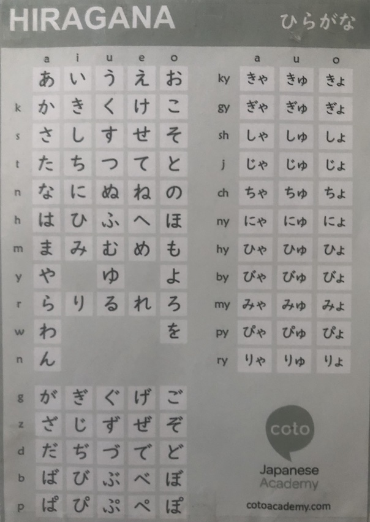

Mein Werdegang
- Grundschule in Tuttlingen
- Ludwig-Uhland-Realschule in Tuttlingen
- Berufsausbildung & gleichzeitig Fachhochschulreife in Wurmilngen/Tuttlingen
- Bei ASOS in England gearbeitet
- Studium an der Hochschule Furtwangen begonnen
Ich bin am 26.07.1997 geboren & Löwe vom Sternzeichen. In meiner Freizeit lerne ich zur Zeit Japanisch.
Stärken & Schwächen
Meine größten Stärken sind meine Offenheit und Auffassungsgabe.
Meine größten Schwächen sind Zeitmanagement und Organisation. Was das Online-Studium nicht vereinfach, aber ich arbeite daran.